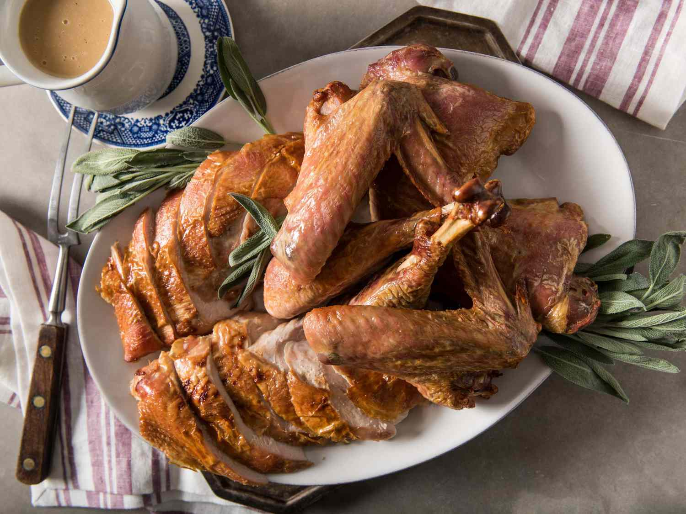

Home | Recipe: Roast Turkey | Recipe: Cranberry Sauce

You've made turkey & you've still got that nagging feeling you forgot something.
That's right! You forgot the cranberry sauce. Either you like it, or you're incorrect; in which case, you should still make it for the right-minded people at your table.